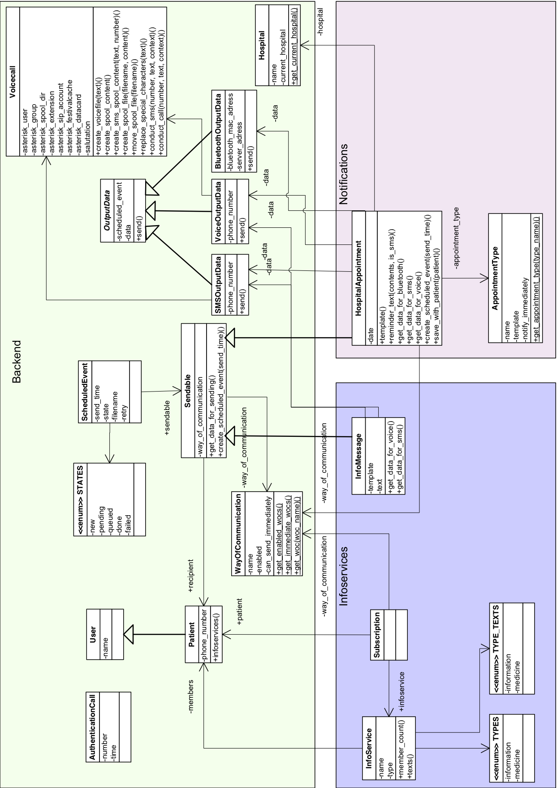
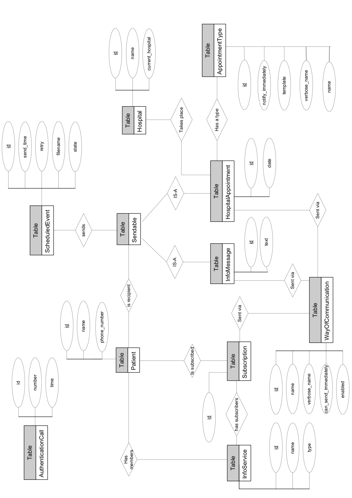

Developer Manual for Sendinel
Sending SMS and Phone Calls to Patientshttp://www.sendinel.org
Potsdam, May 2010
[This page intentionally left blank]
Welcome to the Development of Sendinel. On the following pages you will find useful information that should enable you to further develop Sendinel. Please note, that this manual is for developers only. When you read this, you should be familiar with Sendinel. If you do not know Sendinel yet please check the User Manual, the Installation Manual and the other resources that are provided on the Sendinel website http://www.sendinel.org.
In the following the technologies that are used in Sendinel are explained. Depending on which part of Sendinel you want to work on, you should be more or less familiar with the concerning technology. All used technologies are published under an Open Source License and can be downloaded for free from the internet.
Since the front-end of Sendinel is a web application, HTML is used to define the structure of the webpages and CSS is used to define the style of the webpages. If you want to do anything that the user is supposed to see you should be well-familiar with both.
JavaScript is used for logic in the user interface. Nearly everywhere where you can see forms, JavaScript is active. The JavaScript library jQuery is used to aid the development in JavaScript.
http://jquery.com/
Django is the web framework which holds most of the business logic of Sendinel. It also handles the database connection. The database used as default is SQLite, which needs no extra server but saves a whole SQL database in a file. Django uses Python as it’s programming language. Major parts of Sendinel are implemented using Django so you should be familiar with it.
http://www.djangoproject.com/
http://www.python.org/
http://www.sqlite.org/
The Asterisk telephony server handles SMS and VoiceCalls. The "chan_datacard" module connects the Asterisk server to the 3G USB stick.
The Bluetooth client application sends information via Bluetooth from the server via a terminal computer to a patient. It is written in Java.
The best option to obtain Sendinel if you want to further develop on it would be to fork from our
GitHub page http://GitHub.com/sendinel/sendinel.
First you have to have a GitHub account. If you don’t have one yet, you need to click on "Login" in
the upper right corner, then on "(Pricing and Signup)". Then you can choose which GitHub account
you want to have. If you don’t mind that all your repositories are public, having a GitHub account is
for free.
If you are logged in, you can then fork Sendinel. How to do that, you can read under
http://help.GitHub.com/forking/.
The fork button is there:
You now have your own forked branch of Sendinel. We developed Sendinel in a test driven way, so
it is good if you know where to find the tests and how to run them. In the section "Architecture" you
find an overview of our app and directory structure. Each app is having a /test directory, where the
python tests for that app live in. Examples are backend/tests, groups/tests and web/tests.
If you want to run the tests, you need to have a console opened and you need to be in the
Sendinel/sendinel directory. Then enter the command python manage.py test to run all tests. If you
only want to run the tests of one of the apps, just add the corresponding appname to it, for example
python manage.py test web.
The tests mostly use /backend/tests/backend_test.xml as underlying fixtures. Fixtures contain initial
data sets. The fixtures described in/backend/tests/backend_test.xml are available in the tests if they are
included.
DEBUG = TRUE In order to see proper error messages when you run sendinel on a local server, you need to set the DEBUG variable to True. To do that, please open the /sendinel/settings.py file. You will find the DEBUG variable at the beginning of the document.
Starting the Development Server If you want to run sendinel on the development server, you need to open the console and switch to Sendinel/sendinel. Then enter python manage.py runserver
Sendinel is split into the following parts:
The user interface which is implemented as a web application
The data handling which is done by Django in a database
The output part where data is fetched and sent via Asterisk
The general flow of data is, that the user enters data via the user interface on a client computer, this
data is processed and saved on the server and eventually sent via SMS, Voice Call (via Asterisk) or
Bluetooth (via the client computer again). Information sent via Asterisk must be processed by the
scheduler (to be found in /sendinel/backend/scheduler.py), which polls the database for new
messages. These messages are represented as a ”Sendable” datatype, which is an abstract class in
/sendinel/backend/models.py. There are two types of messages (represented as subclasses of Sendable):
Notifications and InfoServices.
Notifications are messages to inform or remind patients of appointment. Every notification has a type. Our system initially has the notification types ”vaccination”, ”follow-up consultation” and ”lab results”. The text sent to the patient is saved as a template in the NotificationType. For example the template for the vaccination is ”please remember the vaccination at the $hospital on $date”. $hospital and $date are variables that get their content from the data saved in the Notification. The following variables are available:
These variables are replaced by the real values when a new notification is created. New variable can be introduced in the Notification method ”reminder_text()”.
Patients can be subscribed to InfoServices. Therefore an InfoMessage represents a group of patients for a specific topic. By default InfoServices are used for ”arrival of medicine” notifications and group messages. Sending a message to all patient of a InfoService is done with an InfoMessage. In contrast to Notifications, an InfoMessage does not use templates but sends the text directly entered for that InfoMessage.
When the users fill out the form to inform a patient about the arrival of lab results and clicks on
”next”, a new Patient object is created with the newly entered phone number. Also, a Notification
object is created. Because lab results are sent immediately, the date and time are set to today, 12:00
o’clock. Since notifications are always sent one day before the appointment, this message will be sent
immediately.
After optional authentication, the information is saved in the database and a ScheduledEvent is
created. The ScheduledEvent object is the unit that contains all information in order to send the
notification.
The file /sendinel/backend/scheduler.py has the method ”run()” which searches every second for
any ScheduledEvents that need to be sent. So when the ScheduledEvent object is saved
in the database, it is immediately found by the scheduler method. The scheduler then
calls get_data_for_sending() on the ScheduledEvent object and receives an OutputData
object. There are various OutputData subclasses, one for each way_of_communication. In
our case, the users could have only chosen between sms and phonecall. So let’s say an
SMSOutputData object is created. This object is then handed over to the Voicecall class
(Sendinel/sendinel/backend/voicecall.py) which handles the sending of the SMS via the Asterisk
server.
The backend of Sendinel consists of three big modules:
This module is in the "backend" app. It is where things come together and get dispatched again.
This module is in the "infoservices" app. This is where groups and InfoServices are managed.
This module is in the "notifications" app.
Following are the folders in the root directory:
If you have little time, the most important folder is sendinel. Its subfolders are explained in the
second table.
| Folder | Description |
| /BluetoothServer | This Java code is the BluetoothServer running on the terminal computer. A compiled version is in /dist which you can start with java -jar BluetoothServer. You can also use the Installer on Windows computers. |
| /configs | This is where sample config files can be found. Sendinel relies a lot on other components at it is essential that these components are configured right, which is why we provide these sample configurations. |
| /hudson | During development we use Hudson as our Continuous Integration system. In this folder our configuration for is saved. If you want to use Hudson as well, these config files might give you a good starting point how to configure it. http://hudson-ci.org/ |
| /sendinel | This is where the actual application is. |
Lets dig deeper into /sendinel:
| Folder | Description |
| /asterisk | In log_call.py is the method that is used to write incoming AuthenticationCalls from Asterisk to the Database. |
| /backend | This app has been described in the architecture overview as "core". |
| /groups | Groups are regular infoservices about a certain topic. |
| /infoservices | Infoservices define a group of people who should be informed about the same topic. |
| /locale | The localisation files are here. |
| /media | This directory holds all files directly served by the webserver. This includes all JavaScript, CSS and image files. |
| /medicines | Medicines are infoservices where the patients are informed once about the arrival of the medicine they were waiting for. |
| /notifications | Notifications have already been described in the overview and architecture. |
| /templates | The Django HTML Templates are saved here. Every app is having it’s own template sub-directory. |
| /web | This app holds everything front-end related, that does not fit in other apps. |
To populate the database the fixtures from /backend/fixtures can be used. Go to the sendinel root directory and enter either python managy.py loaddata backend to load a minimal set of data for Sendinel to work or python manage.py loaddata backend_test to load a more extended set of test data.
Sendinel supports the translation to other languages with dedicated language files. The background
is well explained in the Django documentation
http://docs.djangoproject.com/en/dev/topics/i18n/localization/
New code should be translated as well. This is well described in the Django documentation: http://docs.djangoproject.com/en/dev/topics/i18n/internationalization/
Asterisk is an open-source telephony server. It can be attached to the public telephone network to allow incoming and outbound calls. This connection can be established via a broad range of connections like Voice Over IP or ISDN. Initially Asterisk was designed for Linux, but it was ported to other operating systems as well.
Connections to other elements in the telephony network are called channels. A channel which allows to connect the Asterisk server to the mobile telephone network is chan_datacard (described later).
One of Asterisk’s central elements is the dialplan configuration. It contains information about what is supposed to happen if a specific number is dialed from one of the connected telephones or if an external call arrives. Those items are called extensions and actually are small programs. Those programs are able to react to user input, control the program flow, play sound files, run external applications etc.
To connect the Asterisk to the telephony network the channel chan_datacard can be used. It was designed to work with Huawei USB 3G data modems (at the moment mainly the model K3520/E169).
The Asterisk server offers a special mechanism for invoking calls from external applications. This mechanism is called spooling. To spool a call, a text file with a certain syntax has to be put into the Asterisk spool directory, which is in most cases located in /var/spool/asterisk/outgoing
One important fact to consider is that the spool file first has to be created and saved in a temporary location. Asterisk requires the file to ”appear” in the spool directory in one file system operation, so a move command has to be used. If the Archive flag is set in the spool file, it will be copied to a special folder after the call has been conducted successfully or eventually failed. The file at this new location will contain a Status entry which contains information about how the call was handled. This file also contains information about each retry for conducting the call.
Creating the described spool files from a Django based web application is not very complicated because it only requires basic access to the computer’s file system. The code for sending can be found in /sendinel/backend/voicecall.py. The starting points are conduct_call() and conduct_sms().
The following steps explain how a voice call is sent from the web application:
After that the Asterisk server processes the file automatically:
It is also possible to replace the execution of a dialplan extension by specifying a application to be run. The application is only executed if the callee answers the call.
The spooling mechanism of the Asterisk server was initially only created for conducting calls. Because calls are conducted synchronous, that means that e.g. content is played exactly the moment, the called person picks up the call. Short messages are sent asynchronously without the need for the callee to pick up.
To send a short message from the Asterisk server only the internal application DatacardSendSMS() has to be called. The problem at this point is that it is not possible to queue running an application through a spool file without somebody answering the call. This means that a separate extension has to be created, which serves as a dummy callee. It answers the call; waits for some time and hangs up again.
This means that for sending short messages a call to this dummy number is spooled. As soon, as the callee answers the call (in this case immediately, because it is our dummy callee), the dialplan extension is executed and from within it, the command for sending SMS is launched. The parameters for this call can be passed through the call spool file, using the Set command. Those variables are globally available.
If only calls but no SMS are to be spooled, the scheduling can be completely done by the Asterisk server. All spool files can be put into the spool directory at the same time and will be processed by Asterisk one after another. Sending SMS with chan_datacard is more problematic because as described above an indirect kind of sending is used.
Therefore the scheduling is done by a separate component of the Sendinel system: the scheduler. It checks regularly if message elements are due and ensures that only one item is active at a time in the Asterisk spool queue. This is accomplished by evaluating the status codes from the spool files that already were processed. Once a call is finished by Asterisk, the next one is scheduled by the Sendinel scheduler.
As described earlier the status of a call can be read from the processed spool file. The Sendinel scheduler does this job and enters the evaluated data into the database for the corresponding Scheduled Event. The status in the database may be one of the following:
The Asterisk server can also return the status Expired, which is handled by the Sendinel scheduler. The event is re-scheduled as set in the configuration.
The Sendinel authentication mechanism is based on recognising the Caller ID of incoming calls. When a call arrives in the extension for incoming calls, a special AGI (Asterisk Gateway Interface) script is started, which passes the data of the caller to the python script /sendinel/asterisk/call_log.py. This script writes the data to Sendinel’s database from. When the data is read by the user interface the authentication is done.

